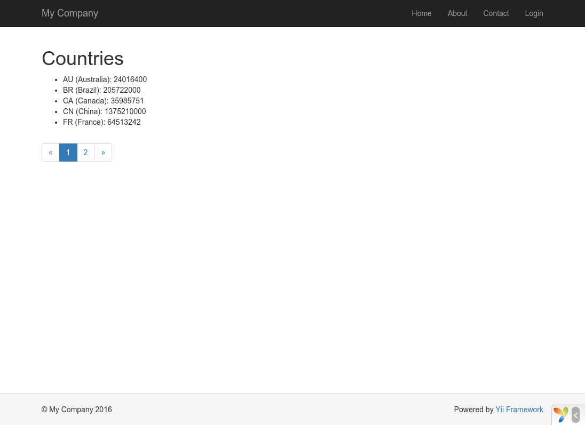

データベースを扱う ¶
この節では、country という名前のデータベーステーブルから読み出した国データを表示する新しいページの作り方を説明します。
この目的を達するために、データベース接続を構成し、アクティブレコード クラスを作成し、アクション を定義し、そして ビュー を作成します。
このチュートリアルを通じて、次のことを学びます。
- DB 接続を構成する方法
- アクティブレコードのクラスを定義する方法
- アクティブレコードのクラスを使ってデータを検索する方法
- 改ページを伴う仕方でビューにデータを表示する方法
この節を完了するためには、データベースを使うことについて基本的な知識と経験が無ければならないことに注意してください。 具体的に言えば、DB クライアントツールを用いてデータベースを作成する方法と、SQL 文を実行する方法を知っていなければなりません。
データベースを準備する ¶
まず初めに、yii2basic という名前のデータベースを作成してください。このデータベースからアプリケーションにデータを読み出すことになります。
Yii は多数のデータベース製品に対するサポートを内蔵していますので、作成するデータベースは、SQLite、MySQL、PosttreSQL、MSSQL または Oracle から選ぶことが出来ます。
以下の説明では、話を単純にするために、MySQL を前提とします。
次に、データベースに country という名前のテーブルを作り、いくつかのサンプルデータを挿入します。
そうするためには、次の SQL 文を実行することが出来ます。
CREATE TABLE `country` (
`code` CHAR(2) NOT NULL PRIMARY KEY,
`name` CHAR(52) NOT NULL,
`population` INT(11) NOT NULL DEFAULT '0'
) ENGINE=InnoDB DEFAULT CHARSET=utf8;
INSERT INTO `country` VALUES ('AU','Australia',24016400);
INSERT INTO `country` VALUES ('BR','Brazil',205722000);
INSERT INTO `country` VALUES ('CA','Canada',35985751);
INSERT INTO `country` VALUES ('CN','China',1375210000);
INSERT INTO `country` VALUES ('DE','Germany',81459000);
INSERT INTO `country` VALUES ('FR','France',64513242);
INSERT INTO `country` VALUES ('GB','United Kingdom',65097000);
INSERT INTO `country` VALUES ('IN','India',1285400000);
INSERT INTO `country` VALUES ('RU','Russia',146519759);
INSERT INTO `country` VALUES ('US','United States',322976000);
この時点で、あなたは yii2basic という名前のデータベースを持ち、その中に三つのカラムを持つ country というテーブルがあり、country テーブルは 10 行のデータを持っている、ということになります。
DB 接続を構成する ¶
先に進む前に、PDO PHP 拡張および使用しているデータベースの PDO ドライバ (例えば、MySQL のための pdo_mysql) の両方をインストール済みであることを確認してください。
アプリケーションがリレーショナルデータベースを使う場合、これは基本的な必要条件です。
これらがインストール済みなら、config/db.php というファイルを開いて、あなたのデータベースに適合するようにパラメータを変更してください。
デフォルトでは、このファイルは下記の記述を含んでいます。
<?php
return [
'class' => 'yii\db\Connection',
'dsn' => 'mysql:host=localhost;dbname=yii2basic',
'username' => 'root',
'password' => '',
'charset' => 'utf8',
];
この config/db.php というファイルは典型的なファイルベースの 構成情報 ツールです。
この構成情報ファイルが、背後のデータベースに対する SQL クエリの実行を可能にする yii\db\Connection インスタンスの作成と初期化に必要なパラメータを指定するものです。
上記のようにして構成された DB 接続は、アプリケーションコードの中で Yii::$app->db という式でアクセスすることが出来ます。
Info:
config/db.phpは、メインのアプリケーション構成情報ファイルであるconfig/web.phpによってインクルードされます。 このconfig/web.phpが アプリケーション インスタンスが初期化される仕方を指定するものです。 詳しい情報については、構成情報 の節を参照してください。 Yii がサポートを内蔵していないデータベースを扱う必要がある場合は、以下のエクステンションの利用を検討してください。
アクティブレコードを作成する ¶
country テーブルの中のデータを表現し取得するために、アクティブレコード から派生した Country という名前のクラスを作成し、それを models/Country.php というファイルに保存します。
<?php
namespace app\models;
use yii\db\ActiveRecord;
class Country extends ActiveRecord
{
}
Country クラスは yii\db\ActiveRecord を拡張しています。この中には一つもコードを書く必要はありません。
単に上記のコードだけで、Yii は関連付けられたテーブル名をクラス名から推測します。
Info: クラス名とテーブル名を直接に合致させることが出来ない場合は、yii\db\ActiveRecord::tableName() メソッドをオーバーライドして、関連づけられたテーブル名を明示的に指定することが出来ます。
Country クラスを使うことによって、以下のコード断片で示すように、country テーブルの中のデータを簡単に操作することが出来ます。
use app\models\Country;
// country テーブルから全ての行を取得して "name" 順に並べる
$countries = Country::find()->orderBy('name')->all();
// プライマリキーが "US" である行を取得する
$country = Country::findOne('US');
// "United States" を表示する
echo $country->name;
// 国名を "U.S.A." に修正してデータベースに保存する
$country->name = 'U.S.A.';
$country->save();
Info: アクティブレコードは、オブジェクト指向の流儀でデータベースのデータにアクセスし、操作する強力な方法です。 アクティブレコード の節で、詳細な情報を得ることが出来ます。 もう一つの方法として、データアクセスオブジェクト と呼ばれる、より低レベルなデータアクセス方法を使ってデータベースを操作することも出来ます。
アクションを作成する ¶
国データをエンドユーザに公開するために、新しいアクションを作成する必要があります。
これまでの節でしたように site コントローラの中に新しいアクションを置くのではなく、国データに関係する全てのアクションに限定した新しいコントローラを作成する方が理にかなうでしょう。
この新しいコントローラを CountryController と名付けます。そして、下記に示すように、index アクションをその中に作成します。
<?php
namespace app\controllers;
use yii\web\Controller;
use yii\data\Pagination;
use app\models\Country;
class CountryController extends Controller
{
public function actionIndex()
{
$query = Country::find();
$pagination = new Pagination([
'defaultPageSize' => 5,
'totalCount' => $query->count(),
]);
$countries = $query->orderBy('name')
->offset($pagination->offset)
->limit($pagination->limit)
->all();
return $this->render('index', [
'countries' => $countries,
'pagination' => $pagination,
]);
}
}
上記のコードを controllers/CountryController.php というファイルに保存します。
index アクションは Country::find() を呼び出します。
このアクティブレコードのメソッドは DB クエリを構築して、country テーブルから全てのデータを読み出します。
一回のリクエストで返される国の数を制限するために、クエリは yii\data\Pagination オブジェクトの助けを借りてページ付けされます。
Pagination オブジェクトは二つの目的に奉仕します。
- クエリによって表現される SQL 文に
offset句とlimit句をセットして、一度に一ページ分のデータだけ (1ページ最大5行) を返すようにします。 - 次の項で説明されるように、一連のページボタンからなるページャをビューに表示するために使われます。
コードの最後で、index アクションは index と言う名前のビューをレンダリングしています。
このとき、国データだけでなく、そのページネーション情報がビューに渡されます。
ビューを作成する ¶
最初に、views ディレクトリの下に country という名前のサブディレクトリを作ってください。
このフォルダが country コントローラによって表示される全てのビューを保持するのに使われます。
views/country ディレクトリの中に、下記のコードを含む index.php という名前のファイルを作成します。
<?php
use yii\helpers\Html;
use yii\widgets\LinkPager;
?>
<h1>国リスト</h1>
<ul>
<?php foreach ($countries as $country): ?>
<li>
<?= Html::encode("{$country->name} ({$country->code})") ?>:
<?= $country->population ?>
</li>
<?php endforeach; ?>
</ul>
<?= LinkPager::widget(['pagination' => $pagination]) ?>
ビューは国データの表示に関連して二つの部分に分けられます。
最初の部分では、提供された国データがたどられて、HTML の順序無しリストとしてレンダリングされます。
第二の部分では、アクションから渡されたページネーション情報を使って、yii\widgets\LinkPager ウィジェットがレンダリングされます。
LinkPager ウィジェットはページボタンのリストを表示します。ボタンのどれかをクリックすると、対応するページの国データが更新表示されます。
試してみる ¶
上記のコード全てがどのように動作するかを見るために、ブラウザで下記の URL をアクセスします。
http://hostname/index.php?r=country%2Findex

最初、ページは5つの国を表示しています。 そして、国リストの下には、4つのボタンを持ったページャがあります。 "2" のボタンをクリックすると、ページはデータベースにある次の5つの国、すなわち、2ページ目のレコードを表示します。 注意深く観察すると、ブラウザの URL も次のように変ったことに気付くでしょう。
http://hostname/index.php?r=country%2Findex&page=2
舞台裏では、yii\data\Pagination が、データセットをページ付けするのに必要な全ての機能を提供しています。
- 初期状態では、yii\data\Pagination は、1ページ目を表しています。
これを反映して、国の SELECT クエリは
LIMIT 5 OFFSET 0という句を伴うことになります。 その結果、最初の5つの国が取得されて表示されます。 - yii\widgets\LinkPager ウィジェットは、yii\data\Pagination::createUrl() によって作成された URL を使ってページボタンをレンダリングします。
URL は、別々のページ番号を表現する
pageというクエリパラメータを含んだものになります。 - ページボタン "2" をクリックすると、
country/indexのルートに対する新しいリクエストが発行され、処理されます。 yii\data\Pagination が URL からpageクエリパラメータを読み取って、カレントページ番号を 2 にセットします。 こうして、新しい国のクエリはLIMIT 5 OFFSET 5という句を持ち、次の5つの国を表示のために返すことになります。
まとめ ¶
この節では、データベースを扱う方法を学びました。 また、yii\data\Pagination と yii\widgets\LinkPager の助けを借りて、ページ付けされたデータを取得し表示する方法も学びました。
次の節では、Gii と呼ばれる強力なコード生成ツールを使う方法を学びます。 このツールは、データベーステーブルのデータを取り扱うための「作成・読出し・更新・削除 (CRUD)」操作のような、通常必要とされることが多いいくつかの機能の迅速な実装を手助けしてくれるものです。 実際のところ、あなたがたった今書いたばかりのコードは、Gii ツールを使えば、全部、Yii が自動的に生成してくれるものです。